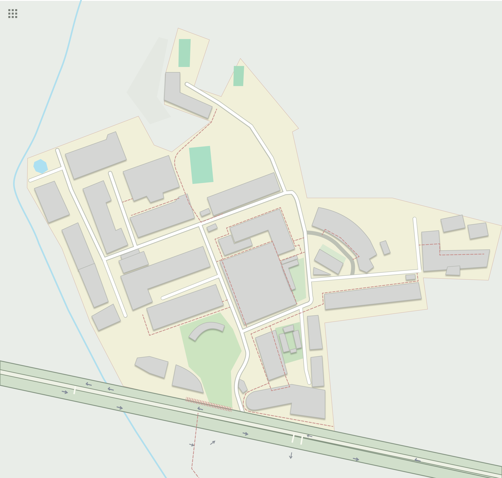

USTP map landmark picker
Zoom in, click the exact spot on the map, then enter that same spot’s latitude and longitude. Drag to pan; use the mouse wheel or zoom buttons.

Loading map image… Zoom
Click a landmark on the map.
Zoom in, click the exact spot on the map, then enter that same spot’s latitude and longitude. Drag to pan; use the mouse wheel or zoom buttons.
